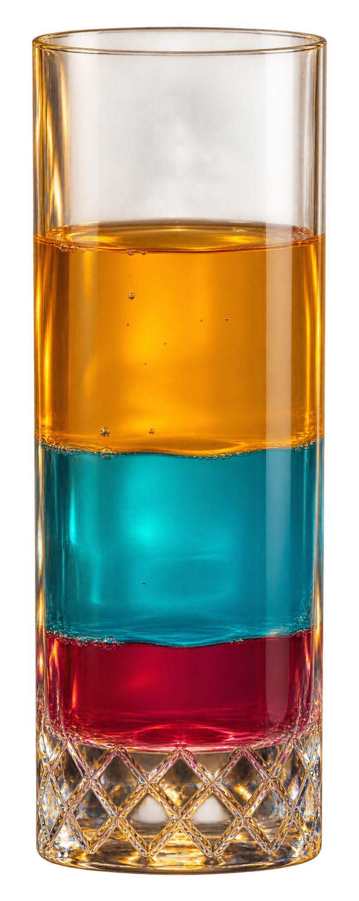

COCKTAIL BAR · COLOR SORT
今夜は、
遊んで乾杯。
色をそろえて、カクテルを仕上げる。
きらめく一杯を、あなたの手で。

MIX YOUR PERFECT MOMENT
START
→
851 STAGES
✧
TAKE YOUR TIME
‹ TOP
◒
WATER SORT
A LITTLE MOMENT OF CLARITY
♫ 音 ON
BAR GRASS · COLOR SORT
今夜は、遊んで乾杯。
光に満ちたボトルを、同じ色で満たしましょう。
LEVEL
01
MOVES
0
完成
0 / 2
注ぐボトルを選んでください
LAST CALL
GAME OVER
終了を確認しています…
CHEERS!
完成！
次のステージへ →
盤面を見る